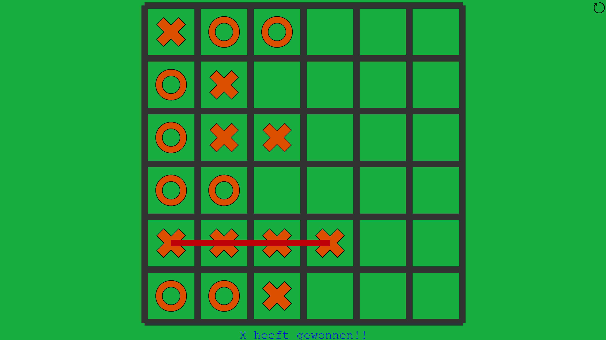
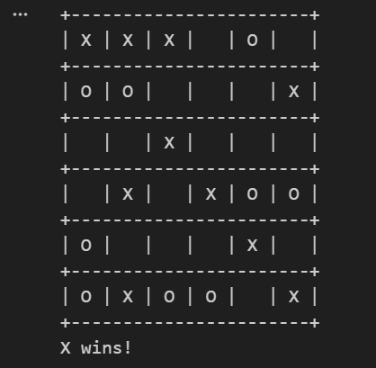

About me
I am Martijn van der Willigen, a second-year CMGT student at Rotterdam University of Applied Sciences. I am seeking an internship where I can combine my practical (MBO) game development experience with the quality-focused approach I have developed during my studies at university (HBO). My goal is to create fun and creative games, and I am looking for an internship where I can further develop these skills.
Skills
- Unity ★★★★★
- Unreal Engine ★☆☆☆☆
- Visual Studio ★★★★★
- Visual Studio Code ★★★★★
- C# ★★★★★
- Python ★★☆☆☆
- JavaScript ★★★☆☆
- Excalibur Engine ★★★☆☆
Languages
- Dutch ★★★★★
- English ★★★★★
- Spanish ★★☆☆☆
Web-game
Web-game was a 2d web game made using Excalibur Engine. In Short the game is a endless runner meaning the player continuously runs through a level while avoiding obstacles and earning points for every second alive. The game was designed to be local co-op allowing two players to play on the same keyboard player1(space=jump, e=shoot arrow) player2(shiftright=jump, enter=shoot arrow). Both players can regain lives picking up hearts that spawn randomly throughout the level, when one player dies it stops counting that players score, when both players die the game ends.
This project was made for Hogeschool Rotterdam as a assignment to learn Excalibur Engine to create web games.
Solved problems
One problem i had was that the background wouldent loop correctly, i ended up solving this by adding these values 2275, 514 in the event where it respawns behind the last background
Technologies used
- Excalibur Engine
- Visual Studio Code
- GitHub pages
- JavaScript
My role
My role was to make the entire project by myself, however we did receive game concept templates so that i hads a clear set of goals to work towards like this endless runner.
Demo and Screenshots
Playable demoProject Repository
Link to projectReflection
In the process of making this game i learned how to create web games using Excalibur Engine and JavaScript, + how to propperly work with object based classes. If i were to redo this project i would focus on removing the slight janky feeling of the game for example the collisions, but also focus on making better spawn rates for the obstacles and hearts. Other than that i would want to display the end scores at the game over screen so players can see how well they did.
TicTacToe-in-Python-with-machine-learning
A Tic Tac Toe game in a 6 by 6 grid using Minimax machine learning to play as your opponent. I made a couple versions but MCTS_AI_implementation_game.ipynb is the final version. In short i made a tic tac toe game in python code where the player plays against an AI that uses the minimax algorithm to make its moves. The player also gets to select a diffeculty which changes how difficult it is to win from the AI, this ranges from easy, medium, to hard. The player plays as X and the AI plays as O, the player can input their move by entering the row and column number of the grid they want to place their X in.
This project was made in request of HR Datalab Healthcare as an internship project, the target audiance was adults with little to none techinical background
Solved problems
I got the visuals working making for a better user experience but it was at cost of the quality of the functionality of the Minimax algorithm, in response i brought this issue up at a meeting at which point i was given the advise to focus on the functionaliy first and visuals second. This led to me stripping the visuals and focusing on getting the minimax algorithm to work propperly which improved the overall functionality of the game.
Technologies used
- Visual Studio Code
- Python
- Jupyter Notebook
- Minimax algorithm
- Anaconda
- Jupyter Notebook plug-in
- pygame package
My role
I was assigned to create a project meeting the criteria of "A zero-sum boardgame using machine learning as opponent with a Graphical User Interface." I was given freedom to choose the game and the machine learning algorithm to use, after doing research i settled on Tic Tac Toe and i was reccomended the Minimax algorithm by my supervisor.
Demo and Screenshots
Visual end version gameplay:

Functional end version gameplay:

Project Repository
Link to projectReflection
I learned what machine learning does and what it's used for by implementing the minimax algorithm in a game. I also learned to value functionality over visuals based on the feedback i got from my supervisor. If i were to redo this project i would focus from the start on functionality first so i had more time to test and improve the minimax algorithm. And i would experiment with different machine learning algorithms to see how they perform in comparison to minimax.
Memory-game-in-Unity
A 2d memory game made in Unity where the player can choose between the themes of flowers or humans both topics were chosen based on research done to see what topics elderly people with dementia resonate well with. The game tracks the ammount of matches, attempts, and the time to track the players progress.
The assignment began as a self-conceived quote in assignment of SintLucas MBO as i was following the Software Development study at the time. The quote I came up with was that a hospital with dementia patients wanted a fun way to test the memory of their patients. Therefor the target audience for this project were elderly people with dementia.
Solved problems
The UI was not fitting the screen correctly. I fixed this by assigning the scene camera to the Canvas.
Technologies used
- Unity
- C#
- Visual Studio
My role
I was assigned to create a quote myself and proceed with the development of the solo project.
Demo and Screenshots
Video demo of gameplayProject Repository
Link to projectReflection
I learned more about the target audiance of elderly people with dementia by doing research, where i learned that seing faces helps them remember facces better, and that flowers align with a common garderning hobby of the target audience. If i were to redo this project i would add a end of game loop where the player would get a summary of their performance, along with advice. And i would also add more options like grid size and more themes to choose from.
contact information
martijnvanderwilligen@gmail.com GitHub